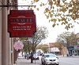

-
美国全自助咖啡屋无店员服务 需顾客自觉付账
国际在线专稿：据美国odditycentral网站6月30日报道，美国北达科他州河谷市（Valley City）的Vault咖啡屋提供全自助服务，这里没有服务员，顾客需要自己动手泡咖啡，然后刷信用卡或将现金投入存款槽付帐走人。咖啡店的收入完全依赖于顾客的诚实...
更多... -
郑伊健现场调制招牌咖啡 周秀娜戴口罩宣誓不分手
6月30日，由寰亚电影出品的爱情喜剧电影《不再说分手》在京宣布将于8月1日七夕情人节全国公映，导演郑丹瑞与主演郑伊健、周秀娜齐齐亮相，并揭晓了影片的首款海报及预告片。 当天主演郑伊健、周秀娜面对分手话题大谈心得感受和各自观点，上演一幕从戏里争到戏外的唇枪舌战，最终郑丹瑞导演...
更多... -
柳小海《怪咖啡》杀青 首演“性格喜剧”
号称“中国版《破产姐妹》”的《怪咖啡》以一家咖啡小店为主要背景，围绕店长柳小海和他的朋友们的日常生活展开。该剧一反以往喜剧套路，不再依靠夸张的动作台词、搞怪的神情扮相来搏笑点，而是由人物性格本身的喜剧特性展开故事，力求在整体上保证喜剧的诙谐幽默的同时...
更多...